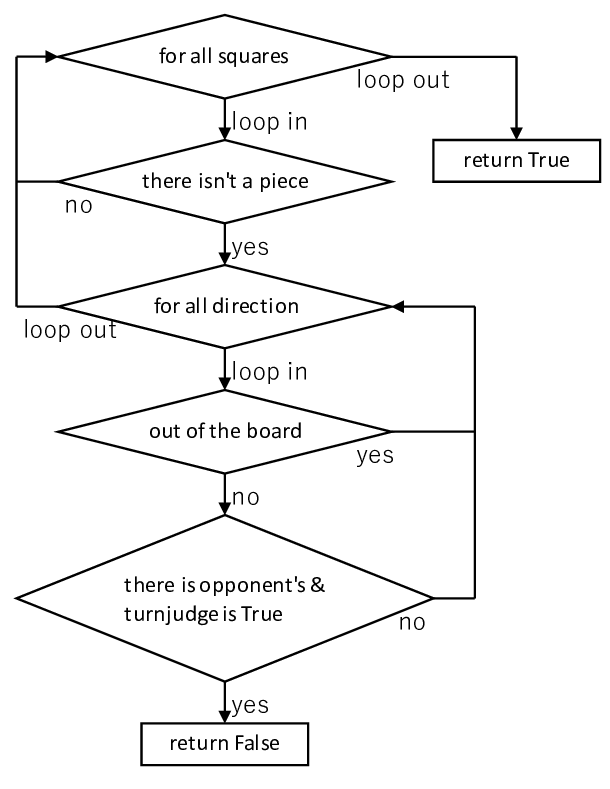

Stage 5 パスと勝敗を判別する
今回は Board クラスの中でも、あんまり出番がないようで実はめちゃめちゃ頑張ってる passjudge, gamesetjudge と、あんまり出番がないようでホントに出番が少ない countpiece の 3 つのメソッドを扱います。これでようやく Board クラスのすべてのコーディングが終わりますよ。いや、「ようやく」なんて言っちゃいけない。チェスの時は Stage 3 から最後の Stage 9 までこういうクラスにお世話になったんだから。ああ、もう思い出したくもねえ。
目次
5-1 パスを判別する
リバーシにおいてパスは「どこにも石を置けない」状態で避けては通れないものであり、またこの状況でないと許されないものでもあります。したがって「どこにも石を置けないか、実は置けるマスがあるのか」これを判別する機能が欲しいわけです。それをするのが passjudge メソッドというわけです。
やることはとても単純で、すべてのマスをシラミつぶしに眺めて石を置けないか確認しているだけです。とりあえず下に概略を書いておきましょう。
もうこれでわかりましたよね。解説要りませんよね。要りますか。欲しがりですねぇ。
まず大外の 2 重 for ループですべてのマスをめぐっています。もし [row, col] に石があったら、そのマスには石をおくことができませんから continue しちゃってください。マスが空いていたら 4-4 と同じ要領でマスに石を置けるか確認します。もし石が置けるようでしたら、「player はパスなんかしないでそこのマスに石置きなさい」ということになりますので、「パスはできない」Flaase をリターンです。
もしすべてのマスを巡って全部のループを抜けても、どこにも置き場所がないということになれば、「パスしないといけない」True をリターンしちゃってください。
5-2 石を数える
気が早いですがゲームセットになった時にお互いの石の数を数え上げる機能を作りましょう。簡単です。ただただすべてのマスを巡って白黒の石の数を数え上げるだけですよ。宿題にしたって物足りないくらいですよね。
ただし、リターンするのは [黒の石の数, 白の石の数] という形のリストです。流石にこれくらいは解説しとかないとスペースがもったいない。
5-3 ゲームセットを判別する
ゲームセットになるのは
- マスが全部埋め尽くされたとき
- 互いにどのマスにも石を置けないとき
ですから、結局は「両方がパスしなければいけない場合」とまとめることができますね。いや、「互いにどのマスにも置けない」でいいんですけれども、私の説明の意図を考えてくださいよ。さっき作った passjudge 是非ともここで使いたいでしょ。
そうとわかればこんなに簡単なことはありません。どちらか一方でもパスできない状況にあれば False を、そうでなければ True をリターンですね。
クラスのコンストラクタ __init__ で game_status というのをこしらえてございすので、その値をいじくっておきましょう。「ゲームセット」って言ってんですから GAME_SET に書き換えるだけです。簡単でしょ。
次回予告
今回ろくに解説することありませんでしたね。でもいいんですよ。「リバーシなんて作るの簡単じゃん。俺でもできるわ」っていう方が増えていただければ、私のコードなんか見なくても自分で作るようになりますから。そもそもこのサイトだって、「プログラミングの入門はできたけど、とりあえず何すればいいかわからない」という方に向けた材料提供に過ぎませんし。
次回で完結します。流石に今回ほど説明することがないとはいきませんが、気楽に見てってください。そんなもんでいいんです。プログラマーの体力はバグ直しに温存しておくものですよ。
次回 Stage 6 ゲームを運用する